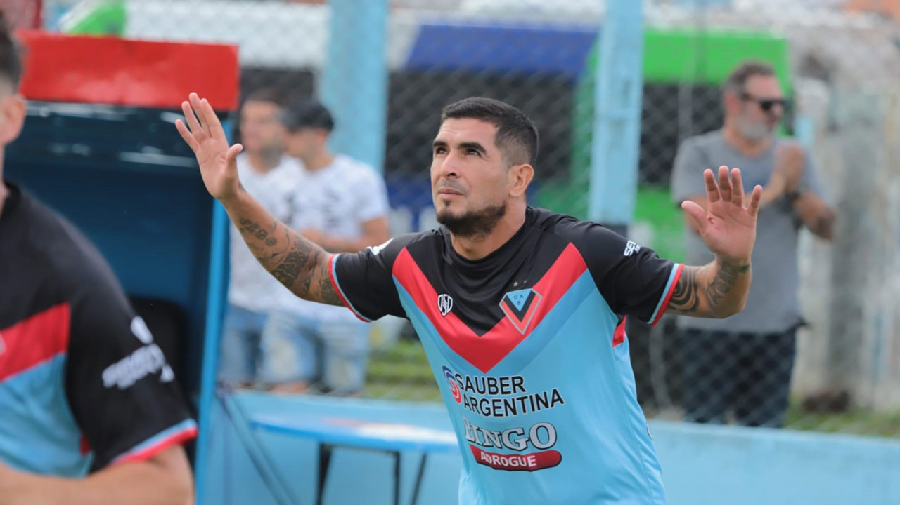
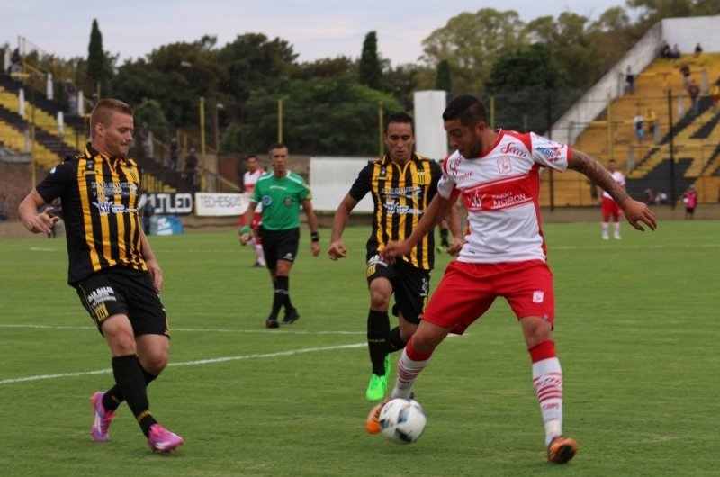
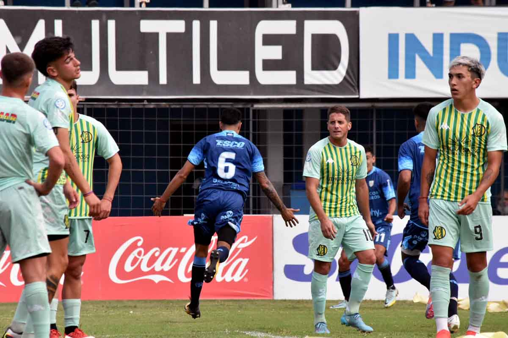

El sobrino del Pocho Lavezzi, el héroe de Brown
después de los empates frente a Estudiantes de Buenos Aires, Atlético de Rafaela y Deportivo Madryn, Brown necesitaba sacar provecho de la localía para retornar a la victoria y volver a meterse en puestos de Reducido.Y conscientes de la importancia de obtener los tres puntos, los jugadores salieron decididos e inclinaron rápidamente la cancha para lograr el objetivo en Adrogué: superó 2-0 a Villa Dálmine y enderezó el rumbo.
Almirante sacó un puntazo en el clásico del Oeste y alcanzó la cima
Dos equipos totalmente diferentes, dos realidades distintas y un clásico en el medio. En el Oeste hubo agite y del bueno. Deportivo Morón y Almirante Brown se sacaron chispas en uno de los duelos más picantes del Ascenso. Los dos demostraron que es un duelo aparte, que es indiferente el momento que atraviesa cada uno.
La Crema empató ante Aldosivi en lo que fue un partidazo
el empate le queda bien al partido. Golpeó primero Rafaela pero a raíz de acertados cambios hechos por Tete Quiroz, Aldosivi igualó el partido. Pese a esto, sobre el final la Crema respondió y consiguió el empate. Algo justo. Gran encuentro vivido en el Nuevo Monumental. Los dos equipos buscaron, los dos equipos se repartieron el dominio del juego y por eso el empate queda bien. Con este resultado Atlético Rafaela queda segundo en la zona B de la Primera Nacional, a tres puntos de los punteros, Chacarita y Quilmes. Por su parte, Aldosivi se posiciona noveno, fuera del reducido pero solo por la diferencia de gol.